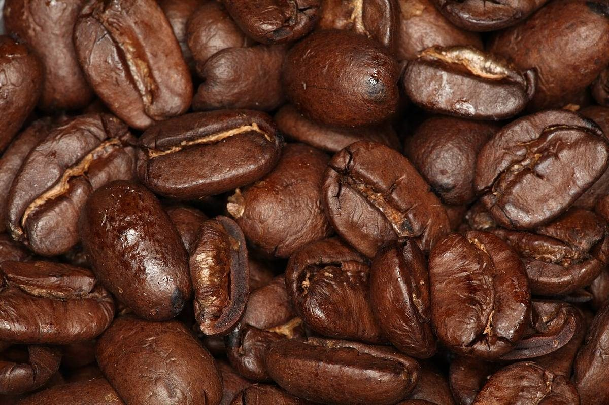
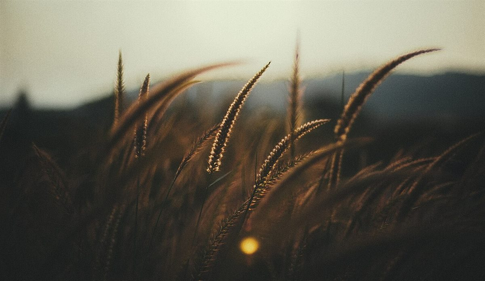

ベーグル

アカウント名の「bagel」の側を、桃色の版に見立てました。
屋号から連想したテーマ「二版のかさなり」
ベーグルと、コーヒーと。


二色刷りのチラシは、ふたつのインクがずれて重なる場所に、どちらでもない色が生まれます。「awai」という名前から、制作側がそんな連想をしてみました。
※制作側の連想で、お店の理念・由来とは無関係です。
アカウント名の「bagel」の側を、桃色の版に見立てました。

アカウント名の「coffee」の側を、青い版に見立てました。

ふたつが重なる紫の部分が、この試作サイトの「あわい」です。






最新の様子は Instagram で。
Instagramを見る